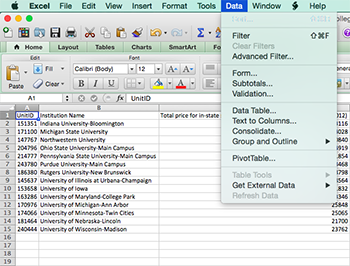
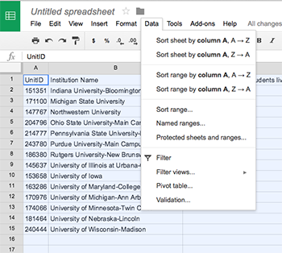
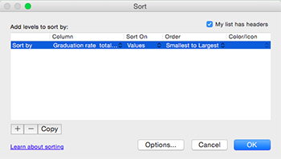
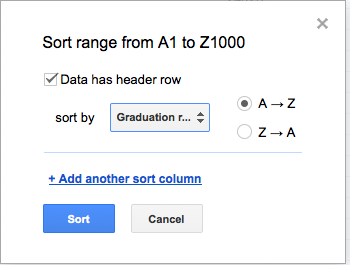

Chapter 5 Minimums, maximums, sorting and ranking
Often, when we’re comparing things, we need to know what the highest and lowest numbers in our data set are. And, often it helps to put those in order from highest to lowest or lowest to highest. Doing that, we’re often aiming toward a ranking of our numbers. When you have just a handful of numbers, any of these things can be done by hand with no real trouble. But spreadsheets give us the power to do this over thousands of data points. But before we do thousands, lets walk through a small set of examples.
5.1 How to calculate a minimum, maximum, sort and rank
You do not want to do this by hand, especially if the list of numbers is longer than just a few. You can manually move them around, scan the list for the largest and smallest numbers, but if the list is very long, this is extremely error prone.
5.2 How to calculate a minimum or maximum in a spreadsheet
In both Excel and Google Spreadsheets, there is a function for both minimum and maximum. They aren’t hard to remember. =MIN(FirstCellInRange:LastCellInRange) and =MAX(FirstCellInRange:LastCellInRange) where the FirstCellInRange and LastCellInRange are a cell reference, like A2:A50 or whatever your data requires.
5.3 How to turn a minimum or maximum into a story
Minimums and maximums, by themselves, are rarely interesting. We need to know what they’re attached to in order for them to be interesting. To do that, it’s better that we sort the data in Ascending or Descending order. Sorted in Ascending order, the smallest number is at the top, the biggest at the bottom. With Descending order, it’s vice versa.
First things first: In either Google or Excel, click on the keystone. That’s the blank rectangle left of column A and above row 1 in the upper left corner of your spreadsheet. By doing that, you’ll select everything. Then in both spreadsheet platforms, sorting is found under Data. In Excel, it’s under sort. In Google, it’s sort range.
| In Excel | In Google Spreadsheets |
|---|---|
|  |  |
|  |  |
For our example, select the Graduation Rate column and then select smallest to largest (or A-Z in Google). In both platforms, make sure that the header row check box is checked – your data does have a header row, and it would be a pity to sort it into your data when you hit OK or sort. Which you should do.
And when you sort by lowest graduation rate, what comes up? Uh oh. The Harvard of the Plains doesn’t look so good.
Now it would be time for you to go ask the most basic of all reporter questions: Why?
One last thing: Sometimes a sort just isn’t enough. Editors love ranks. They love a good top X list. Spreadsheets will calculate ranks for you easily. And it’s the same regardless of platform. It looks like this:
=RANK(TheCellYouWantToRank,TheFirstCellInTheRange:TheLastCellInTheRange) where TheCellYouWantToRank is, well, probably the row you’re on. TheFirstCellInTheRange and TheLastCellInTheRange are what they say they are, the first and last cells in the column you want to rank against. So what the RANK function says is “Take this cell and rank it against all the values in this range.” When you copy it down, it’ll just do the next one, and the next, and the next. When you have 14 records, this isn’t interesting. When you have thousands, and you’re interested in some in the middle instead of the top and bottom, ranks are extremely interesting.